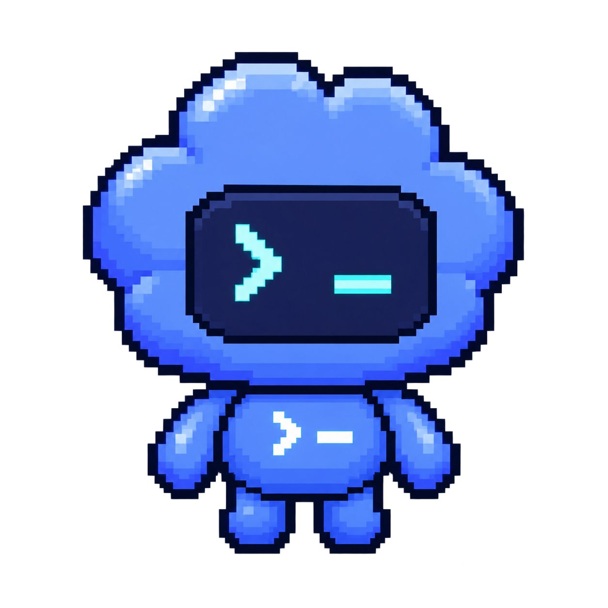

Application agent
Runs automatically · Teach Mode on
Observing the current page…
Open application sidecar
⏸️ Pause
✕ Unlink job
Process this form now
Advanced fallback
Test learned autofill (never submits)
Open dashboard
Mark as filled manually
Verify submitted application
Local connection
Save connection